Studio 01 — 3D design
From screen
to shelf.
Trophies, products, sculptures, enclosures and retail displays — modeled precisely, then actually made: 3D printed, CNC-cut, laser-cut and finished by hand.
Trophies & collectibles
Championship trophies and mascot pieces for the Gum Guild Wars gaming community — designed in SolidWorks and ZBrush, then 3D printed and painted.
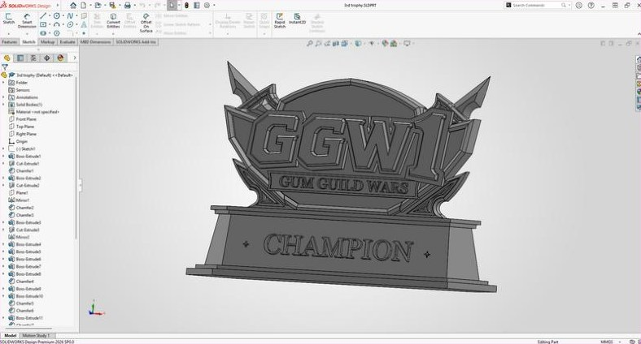

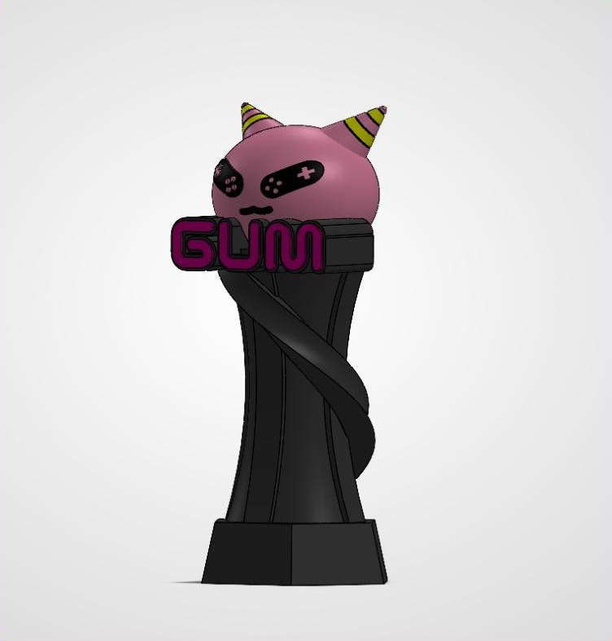
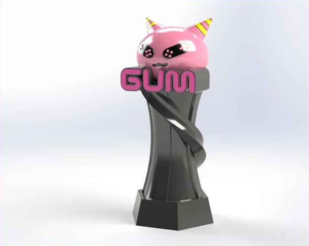
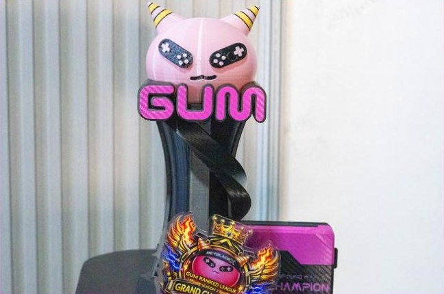
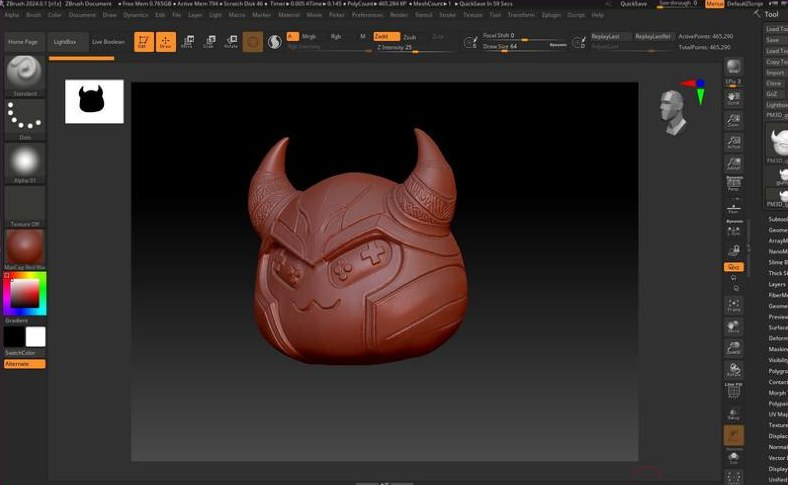

Awards & tokens
Award systems that carry an organization's story — from the Presidential Award trophy to medals, acrylic plaques and laser-cut wooden awards made in batches at LIKHA FabLab.

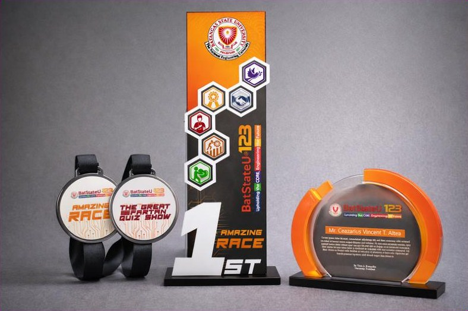
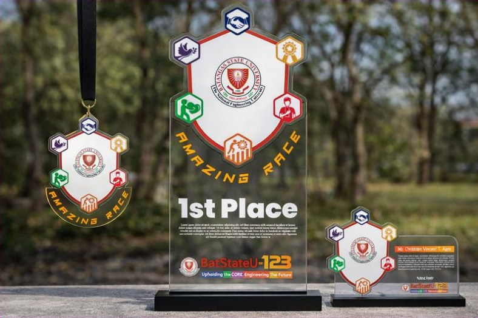
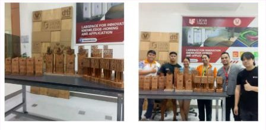
Creative product development
Inhalers designed for kids — friendly platypus, bear and giraffe characters built on one shared inhaler body, so taking medicine feels less scary. Modeled and rendered in SolidWorks.
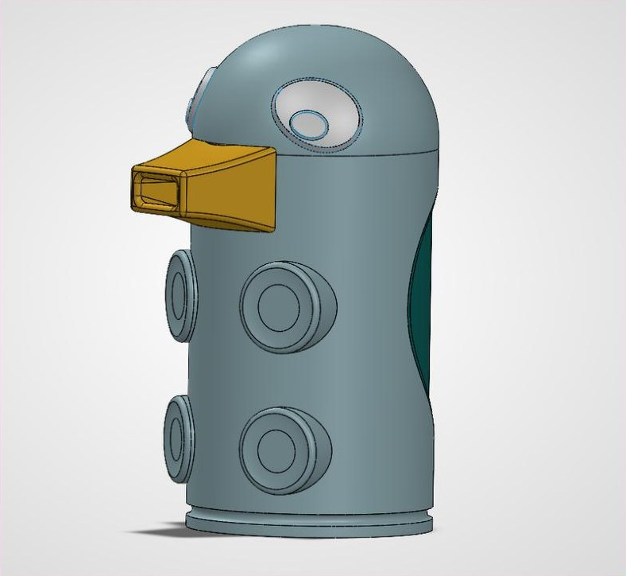
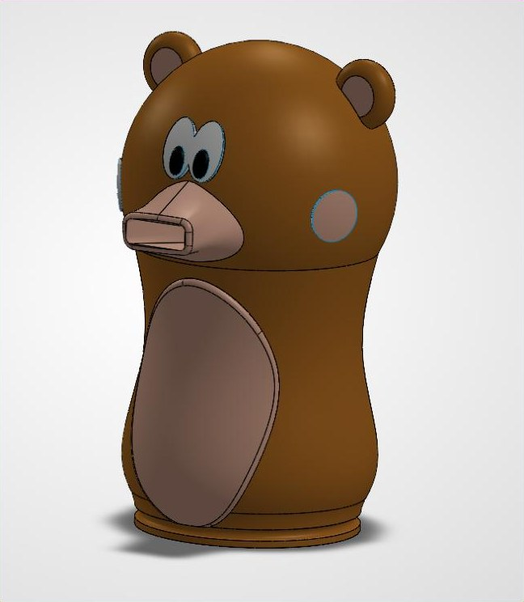
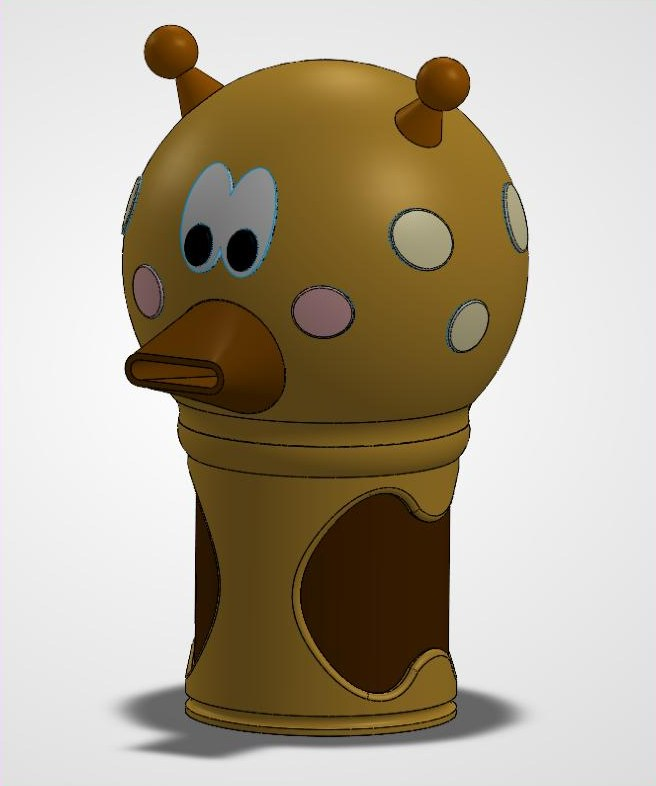
Motion studies · rotate & explode
Each character spins to show its form, then breaks apart into the shared inhaler parts inside — canister, mouthpiece, cap and housing.
Digital sculpting.
Organic forms and creatures — sculpted digitally, with anatomy and surface detail built up by hand.

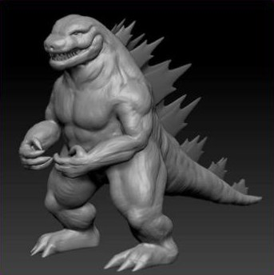
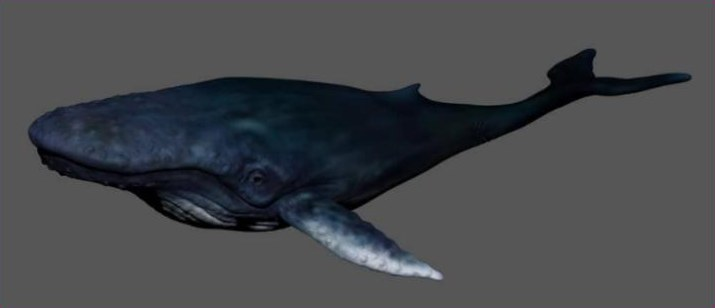
Digital relief
Relief models sculpted in ZBrush and Blender and prepared in Vectric Aspire — every muscle, fold and strand of hair modeled in depth so the CNC router can carve it into wood.

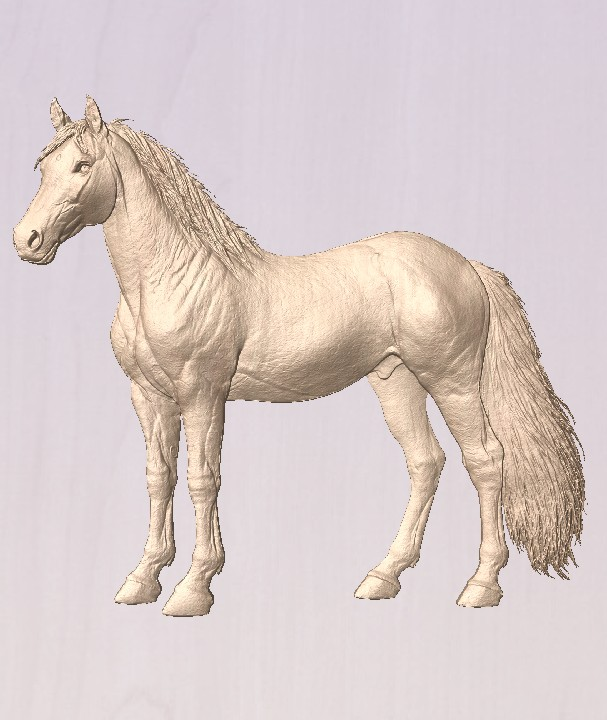
Product parts
Enclosures, mounts, replacement parts and working prototypes — modeled to tolerance, printed and tested for real use.
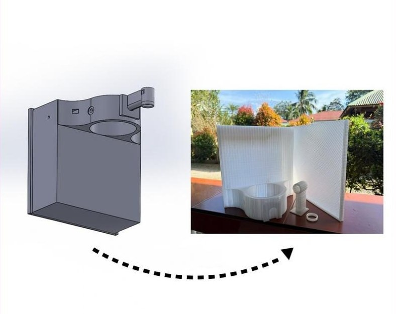
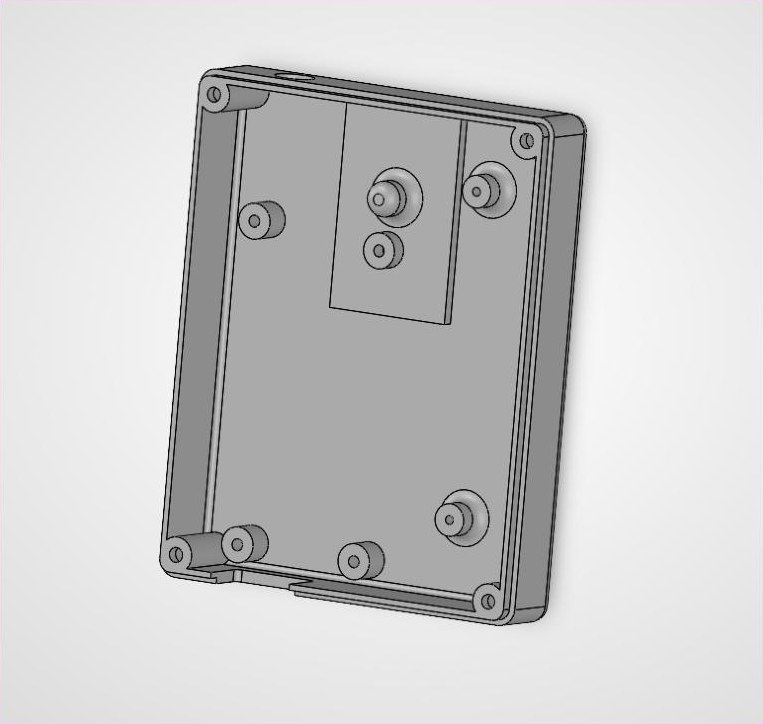
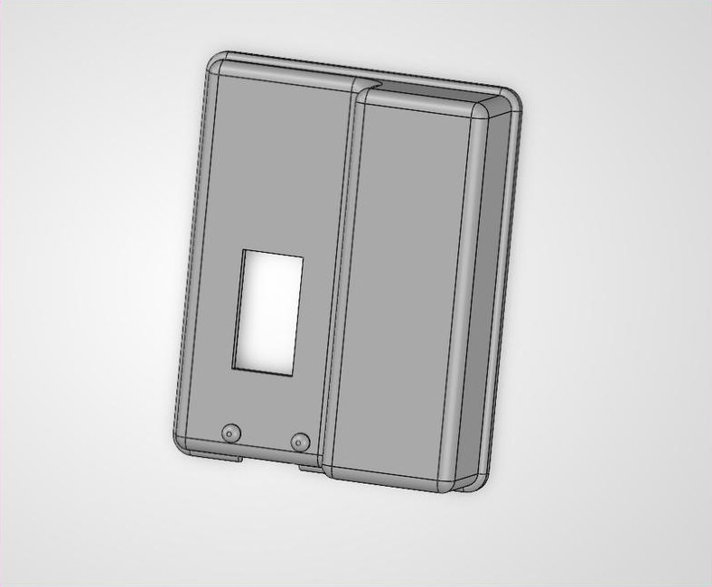
Maple seed–inspired wind turbine propeller
A three-blade propeller whose curved, winged blades borrow their shape from the spinning maple seed. Modeled in CAD, printed, then field-tested on the turbine with a live voltage readout.
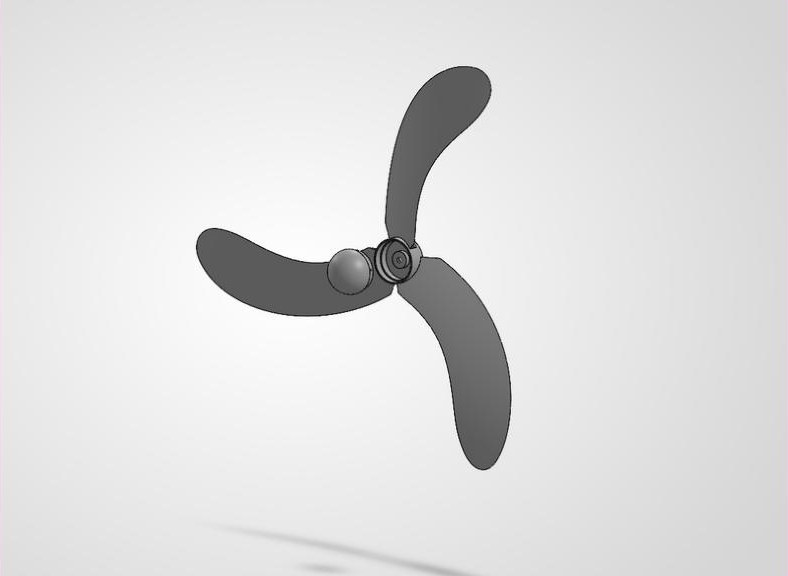
Retail & display
Kiosks, gondolas, booths and full store layouts for visual merchandising — planned in 3D before a single panel gets cut.
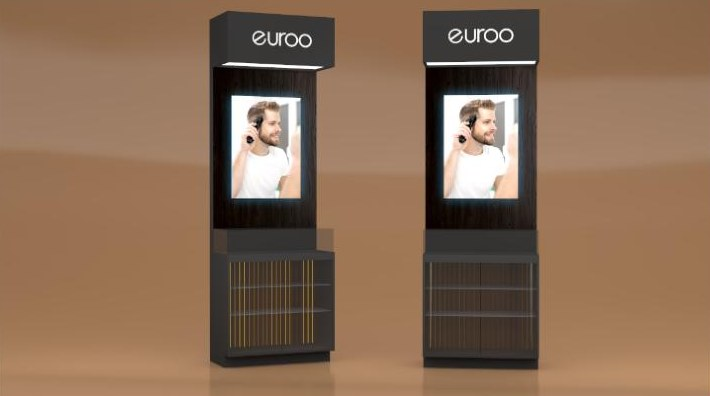
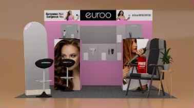
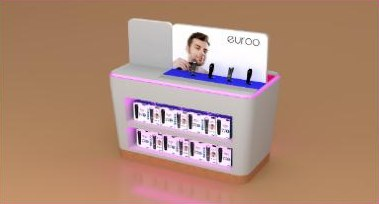
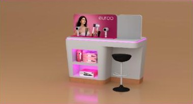
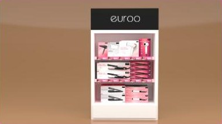
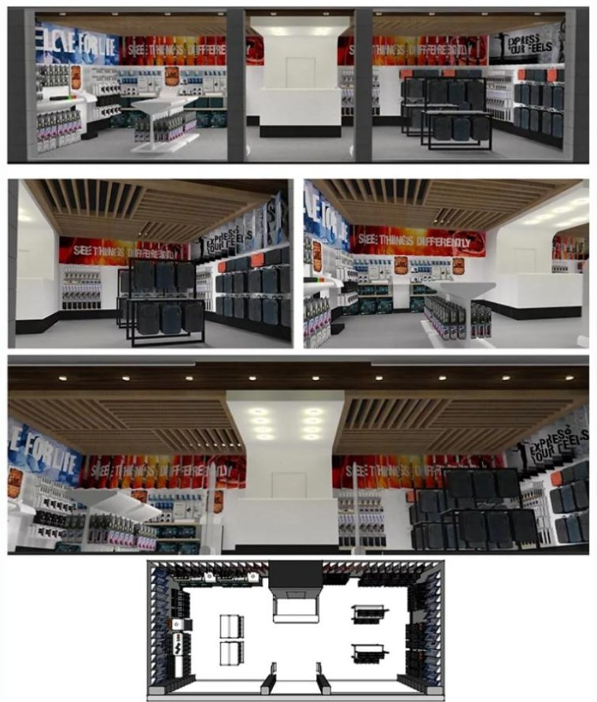
Need something
you can hold?
Trophies and awards, prototypes, collectibles, enclosures and display fixtures.